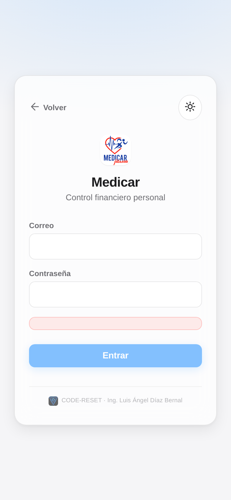
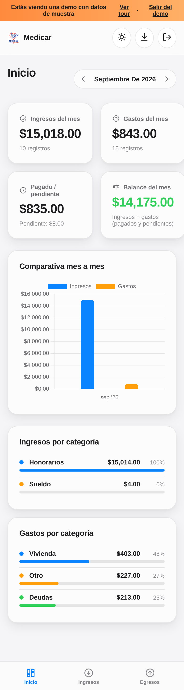
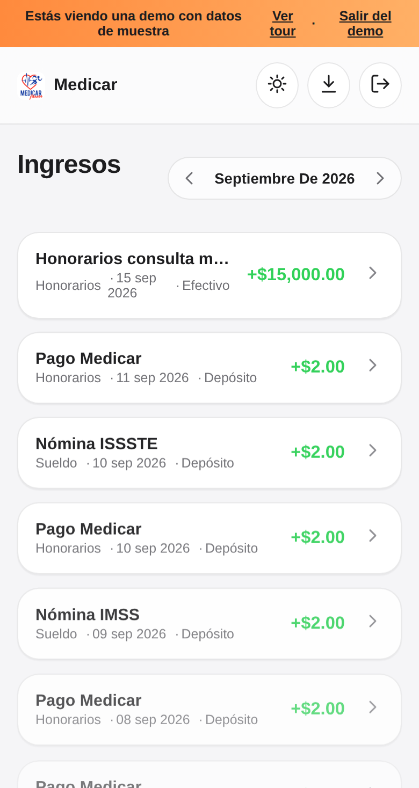
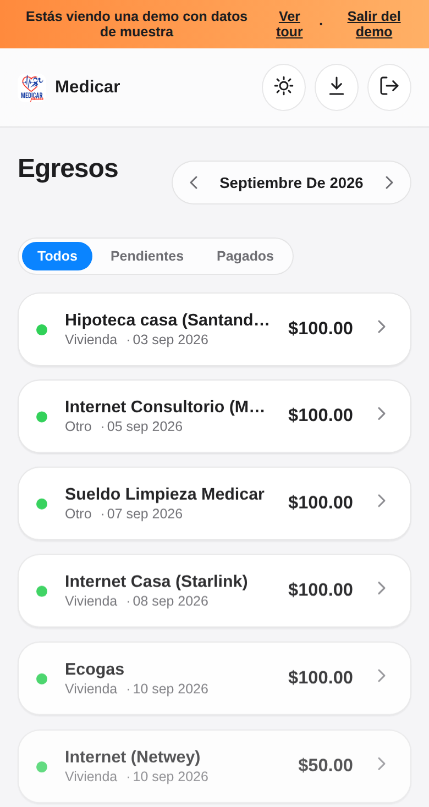
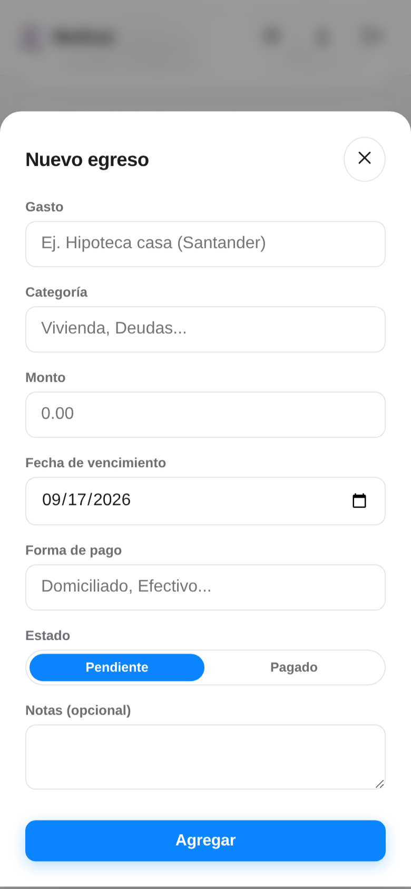

1 Cómo entrar a la app
Medicar es de un solo usuario: tu cuenta ya está creada, no hay registro.
- Abre el enlace de la appEl que te compartió Code-Reset (o el ícono en tu pantalla de inicio, si ya la instalaste).
- Toca "Iniciar sesión"En la pantalla de bienvenida.
- Escribe tu correo y contraseñaLos que Code-Reset te dio al entregar el proyecto.
- Toca "Entrar"Si tus datos son correctos, verás tu resumen financiero de inmediato.

2 Instalar como app (PWA)
Puedes agregar Medicar a tu pantalla de inicio, como cualquier app — sin pasar por la App Store ni Play Store.
📱 iPhone (Safari)
Abre la app en Safari → toca el ícono de Compartir (el cuadrado con flecha hacia arriba) → "Agregar a pantalla de inicio" → Agregar.
🤖 Android (Chrome / Samsung Internet)
Abre la app → toca el menú (⋮) → "Instalar app" o "Agregar a pantalla de inicio" → Instalar.
3 Módulo Inicio (métricas)
Tu resumen financiero del mes, de un vistazo.
- Usa las flechas junto al mesPara moverte entre meses anteriores o futuros y ver el resumen de cada uno.
- Revisa las cuatro tarjetasIngresos del mes, gastos del mes, pagado vs. pendiente, y tu balance final.
- Consulta la comparativa mes a mesLa gráfica compara tus ingresos contra tus gastos, mes con mes, desde que empezaste a usar la app.
- Revisa el desglose por categoríaQué categorías de ingresos y de gastos pesan más en el mes.

4 Módulo Ingresos
Aquí registras todo lo que entra: honorarios, sueldos, cualquier ingreso.
- Toca el botón "+"Abajo a la derecha, para agregar un ingreso nuevo.
- Llena el formularioConcepto, categoría, monto, fecha en que lo recibiste y forma de recepción (efectivo, depósito...).
- Toca "Agregar"El ingreso aparece de inmediato en tu lista y se suma a las métricas del mes.
- Para editar o eliminarToca cualquier ingreso de la lista — se abre el mismo formulario con sus datos, listo para modificar o borrar.
| Campo | Qué anotar |
|---|---|
| Concepto | Ej. "Honorarios consulta médica" |
| Categoría | Honorarios, Sueldo, Renta... (puedes escribir una nueva) |
| Monto | Cantidad recibida |
| Fecha de percepción | Cuándo lo recibiste |
| Forma de recepción | Efectivo, Depósito, Transferencia... |

5 Módulo Egresos
Aquí controlas tus gastos, ordenados por fecha de vencimiento, con su estado de pago.
- Revisa el punto de colorVerde = Pagado, naranja = Pendiente.
- Usa los filtros "Todos / Pendientes / Pagados"Para enfocarte en lo que aún debes pagar este mes.
- Toca el botón "+"Para agregar un gasto nuevo (hipoteca, renta, tarjetas, servicios...).
- Marca el estadoAl crear o editar un gasto, elige si ya está "Pagado" o sigue "Pendiente".
- Toca cualquier gasto para editarlo o eliminarloPor ejemplo, para marcarlo como pagado en cuanto lo liquides.


6 Preguntas frecuentes
Olvidé mi contraseña, ¿qué hago?
Contacta a Code-Reset (ver abajo) para restablecerla desde la consola de administración.
¿Puedo usar la app en más de un teléfono?
Sí. Con el mismo correo y contraseña puedes entrar desde cualquier dispositivo — los datos son los mismos en todos, porque viven en la nube (Firebase), no en el teléfono.
¿Funciona sin internet?
La app abre sin internet gracias a que guarda una copia de su diseño en tu teléfono, pero para ver o guardar tus ingresos y gastos reales necesitas conexión, porque se guardan en la nube.
¿Puedo pedir un módulo nuevo más adelante?
Sí — la app está diseñada para crecer. Cualquier módulo nuevo (por ejemplo, reportes anuales o recordatorios de pago) se puede agregar sin tocar lo que ya funciona.
¿Alguien más puede ver mis datos?
No. Las reglas de seguridad de la base de datos están configuradas para que solo tu cuenta pueda leer o escribir tu información.